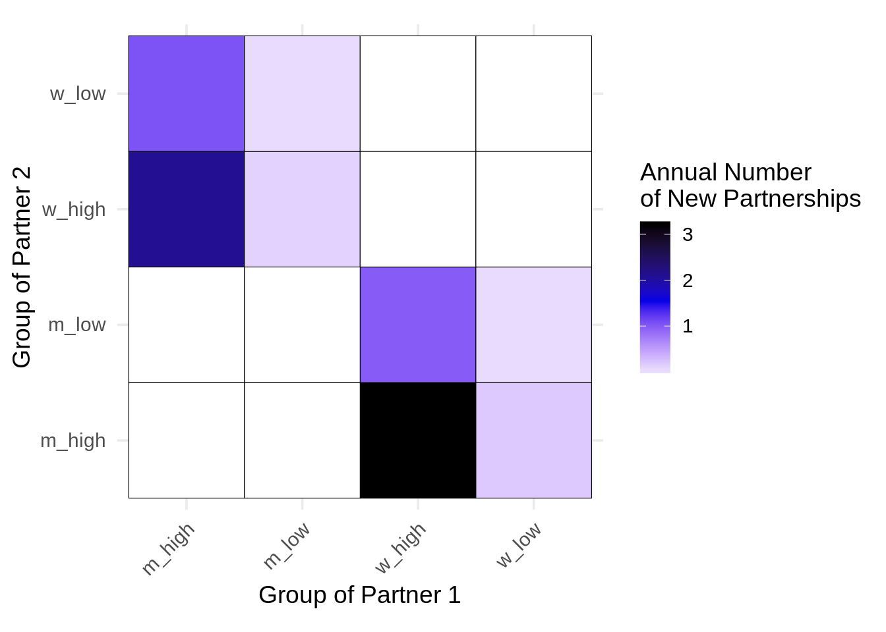
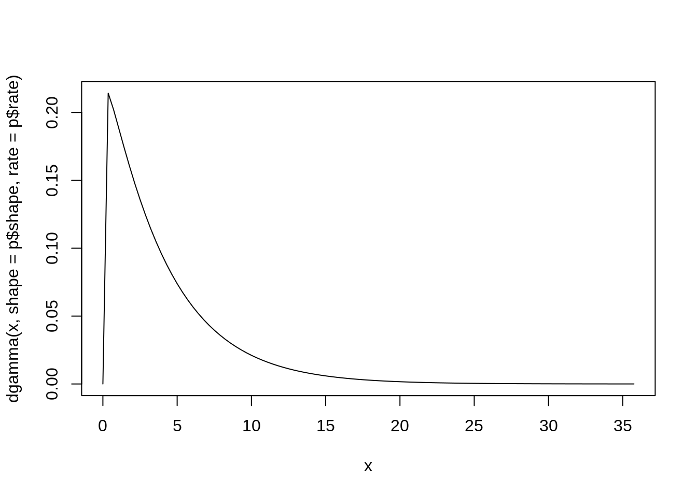
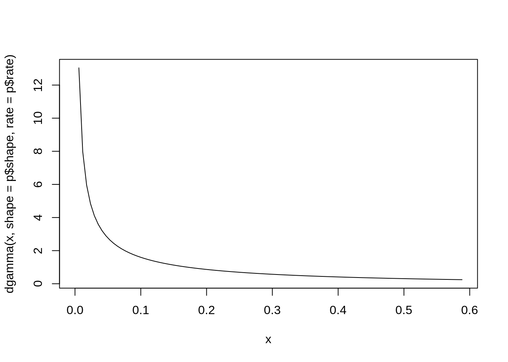
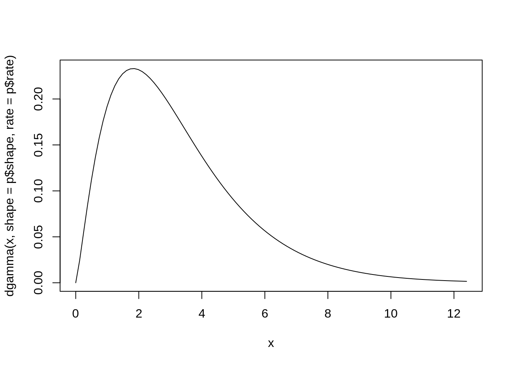
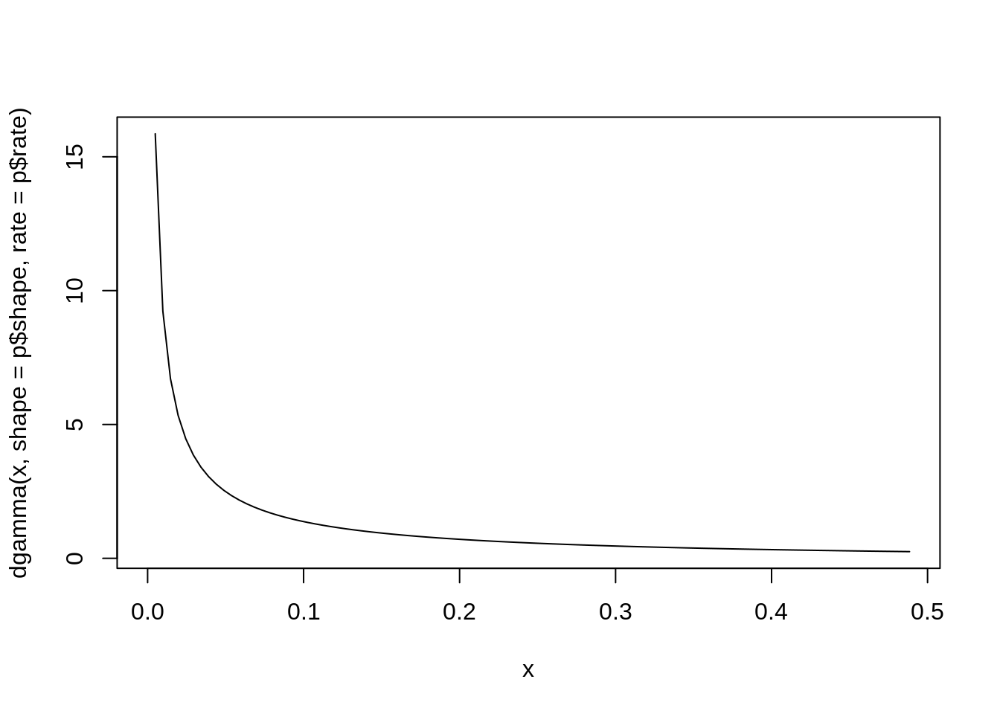

2 Heterosexual population
This mixing matrix is for the heterosexual-only model. There are two sexes, one sexID (heterosexual), and two SA groups, so the matrix will be 4 rows by 4 columns. As stated above, the three steps are: estimate, distribute, and balance.
2.1 Estimate the number of new partnerships with each sex
This is a function that we’ll need to use to get the proportion of the population in each group. This is important because we calculate the total number of partnerships supplied by a group as the per-person number of partnerships in a certain group times the proportion of the population in that group.
For example, if high-SA women had 2 partnerships per year on average and 25% of the population was high-SA women, then the group of high-SA women would have \(2 \times 0.25 = 0.5\) partnerships per year. This number is called part_g in the code below.
The reason that we use the proportion, rather than some total number of people, is that the size of the population doesn’t matter for the dynamic model. To get the absolute numbers for a population of, say, 100,000 people, we can just multiply the total number of partnerships by 100,000. That is, using the example above, high-SA women would “offer” 50,000 partnerships per year. Also note that the function uses the survey weights, rather than the number of respondents.
# the q stands for "query"
# denom stands for denominator
get_proportion <- function(natsal,
q_sex = c("m", "w"),
q_sexid = c("het", "gay", "bi"),
q_sexact = c("high", "low"),
denom_sex = c("m", "w"),
denom_sexid = c("het", "gay", "bi"),
denom_sexact = c("high", "low")){
denom <- sum(natsal$total_wt[natsal$r_sex %in% denom_sex &
natsal$r_sexid %in% denom_sexid &
natsal$r_sexact %in% denom_sexact])
qpop <- sum(natsal[natsal$r_sex %in% q_sex &
natsal$r_sexid %in% q_sexid &
natsal$r_sexact %in% q_sexact, "total_wt"])
qpop / denom
}Let’s test this function. What proportion of heterosexual men have high and low sexual activity?
# high
get_proportion(all_sex, q_sex = "m", q_sexact = "high", q_sexid = "het",
denom_sex = "m", denom_sexid = "het")## [1] 0.1550116# low
get_proportion(all_sex, q_sex = "m", q_sexact = "low", q_sexid = "het",
denom_sex = "m", denom_sexid = "het")## [1] 0.8449884They add up to 1, as should be the case.
Now, we calculate the average number of new partners per-person with each sex (rp_sex), as well as the total number of new partners supplied by each group (part_g).
We also calculate the standard deviation of new partners using the function weighted.sd(), which is based on a formula from Wikipedia:
weighted.sd <- function(x, w){
weighted_mean <- weighted.mean(x, w)
sum_wts <- sum(w)
wt_var <- t(w) %*% (x - weighted_mean)^2 / (sum_wts - 1)
return(sqrt(wt_var))
}calc_reported <- function(df) {
all_sex %>%
filter(r_sexid == "het") %>%
group_by(r_sex, r_sexact, r_sexid) %>%
summarise(part_p = weighted.mean(hetnonew, w = total_wt),
sdpart = weighted.sd(hetnonew, w = total_wt)) %>%
mutate(rp_sex = ifelse(r_sex == "m", 'w', 'm')) %>%
rowwise() %>%
mutate(prop = get_proportion(all_sex,
q_sex = r_sex,
q_sexact = r_sexact,
q_sexid = "het",
denom_sexid = "het"),
part_g = part_p * prop) %>%
ungroup()
}
het_sexact_rep <- calc_reported(all_sex)
format_table(het_sexact_rep)| r_sex | r_sexact | r_sexid | part_p | sdpart | rp_sex | prop | part_g |
|---|---|---|---|---|---|---|---|
| m | high | het | 4.077 | 3.980 | w | 0.078 | 0.318 |
| m | low | het | 0.232 | 0.422 | w | 0.426 | 0.099 |
| w | high | het | 3.238 | 2.140 | m | 0.051 | 0.166 |
| w | low | het | 0.186 | 0.389 | m | 0.445 | 0.083 |
So, high activity heterosexual men report an average of about 4 new partners per year, and they make up about 7.2% of the total population (note this is roughly half of the proportion of men that have high sexual activity). On average, then, the group of high activity men offers a total of about 0.29 partners per year.
Next, let’s distribute the partnerships across activity levels.
2.2 Distribute partnerships
Since the respondent’s don’t know their partners’ activity levels (but do know their partners’ sex), we make the proportionality assumption and then estimate the proportion of partnerships supplied to each sex by each activity level.
The most general form of this is:
\[ \text{Pr}(S_{rp} = s', G_{rp} = g' \ | \ S_r = s, G_r = g) = \frac{N_{s'g'} \beta_{s'g's}}{\sum_i \sum_j N_{ij} \beta_{ijs}} \]
where:
- \(S_r\), \(G_r\): the respondent’s sex and other demographic characteristics, respectively
- \(S_{rp}\), \(G_{rp}\): the respondent’s partners’ sex and other demos, respectively
- \(N_{ij}\): the proportion of people with sex \(i\) who have other characteristics \(j\),
- \(\beta_{ijk}\) is the number of partnerships that people of sex \(i\) with other characteristics \(j\) reported with sex \(k\),
- the denominator is the total number of partnerships offered to sex \(s\) from all demographic groups (note that, because this is a heterosexual model, the sex is assumed to be the opposite sex - i.e., \(i\) is fixed at \(s'\))
To calculate this for each combination of r_sex and rp_sex, we take the total number of partnerships ‘offered’ by each sex and sexual activity group, and divide it by the total number of partnerships offered by that sex. Then, we define rp_sexid = r_sexid, so the proportion prop_of_avail represents the proportion of partnerships from people of sex1 available to sex2 that come from people of sex1 and SA group sexact1.
make_offered_df <- function(df) {
het_sexact_rep %>%
group_by(r_sex) %>%
mutate(prop_of_avail = part_g / sum(part_g)) %>%
select(sex1 = r_sex,
sexact1 = r_sexact,
sex2 = rp_sex,
prop_of_avail) %>%
ungroup()
}
het_sexact_offered_dist <- make_offered_df(het_sexact_rep)
format_table(het_sexact_offered_dist)| sex1 | sexact1 | sex2 | prop_of_avail |
|---|---|---|---|
| m | high | w | 0.763 |
| m | low | w | 0.237 |
| w | high | m | 0.668 |
| w | low | m | 0.332 |
As an example, the above data shows that men with high sexual actvity account for 76.3% of all partnerships “offered” to women, while men with low sexual activity account for 23.7%.
Let’s check this for women by hand:
- Women (as a group) reported a total of \(0.147 + 0.078 = 0.225\) partnerships with men in the past year.
- Out of this 0.225, high activity women reported \(0.147/0.225 = 65\)%, and low activity women reported \(0.078/0.225 = 35\)%.
- So, if we assume that men do not have a preference for high/low sexual activity women, if they randomly selected a woman as a partner, there’s a 65% chance that they would choose a high-SA woman.
- This is the same number shown in the table above.
Now, we distribute the partnerships across the groups. To do this, we first join the proportion dataframe with the survey dataframe. This join aligns the prop_of_avail and part_p column, so they can be multiplied. Then, we multiply to get the distributed partnerships and define a single variable that describes the two demographic variables (sex and SA group):
distribute_partnerships <- function(report, dist) {
left_join(report, dist,
by = c("rp_sex" = "sex1", "r_sex" = "sex2")) %>%
rename(rp_sexact = sexact1) %>%
mutate(d_part_p = part_p * prop_of_avail,
r_demo = paste(r_sex, r_sexact, sep="_"),
rp_demo = paste(rp_sex, rp_sexact, sep="_")) %>%
select(r_demo, rp_demo, d_part_p, prop)
}
partner_dist_het_sexact <- distribute_partnerships(het_sexact_rep, het_sexact_offered_dist)
format_table(partner_dist_het_sexact)| r_demo | rp_demo | d_part_p | prop |
|---|---|---|---|
| m_high | w_high | 2.725 | 0.078 |
| m_high | w_low | 1.352 | 0.078 |
| m_low | w_high | 0.155 | 0.426 |
| m_low | w_low | 0.077 | 0.426 |
| w_high | m_high | 2.471 | 0.051 |
| w_high | m_low | 0.766 | 0.051 |
| w_low | m_high | 0.142 | 0.445 |
| w_low | m_low | 0.044 | 0.445 |
So, men with high sexual activity reported 4.08 partners. In the distributed table, these ~4 partners are distributed across women with high sexual activity and women with low sexual activity. Note that the proportions are roughly 65% and 35%, which is the proportion of partnerships that high SA women and low SA women offer to men, respectively (as calculated above).
men_high_sa <- partner_dist_het_sexact %>%
filter(r_demo == "m_high")
format_table(men_high_sa)| r_demo | rp_demo | d_part_p | prop |
|---|---|---|---|
| m_high | w_high | 2.725 | 0.078 |
| m_high | w_low | 1.352 | 0.078 |
sum(men_high_sa$d_part_p)## [1] 4.0771522.3 Balancing
Notice that the partnerships are unbalanced. That is, if we calculate the total number of partnerships offered by each group, high SA men report a different number of partnerships with high SA women than high SA women do with high SA men.
partner_dist_het_sexact %>%
mutate(total_group_pships = d_part_p * prop) %>%
filter((r_demo == "m_high" & rp_demo == "w_high") | (rp_demo == "m_high" & r_demo == "w_high")) %>%
select(r_demo, rp_demo, total_group_pships) %>%
format_table()| r_demo | rp_demo | total_group_pships |
|---|---|---|
| m_high | w_high | 0.213 |
| w_high | m_high | 0.127 |
This could be do to random error, under- or over-reporting, or a non-representative survey sample. In any case, we have to ensure that all the partnerships are “realized” - i.e., that the same number are reported by each group participating in the partnership.
To remedy this, we follow Garnett et al., 1994, who define an imbalance \(B\) and then correct the partnerships by multiplying the unbalanced partnering rates by powers of \(B\).
Here, since we have distributed the partnerships across sexual activity groups, we have \(\beta_{sgs'g'}\) as the number of per-person partnerships that group \(sg\) has with group \(s'g'\). The imbalance from the perspective of \(sg\) is \(B_{sg}\):
\[ B_{sg} = \frac{N_{sg} \beta_{sgs'g'}}{N_{s'g'} \beta_{s'g'sg}} \]
Then, the corrected PRs are defined as:
\[\begin{aligned} \beta_{sgs'g'}^* &= \beta_{sgs'g'} / \sqrt{B_{sg}} \\ \beta_{s'g'sg}^* &= \beta_{s'g'sg} \times \sqrt{B_{sg}} \\ \end{aligned}\]While Garnett, et al., 1994 uses different powers of \(B\), we don’t necessarily have information about whether the m_high or w_high number is more reliable (and the interpretation of the power of \(B\) becomes increasingly difficult with multiple sexIDs).
To do this in the code, we join the distributed data frame with itself, reversing the demographic groups. The suffixes show the origin of the numbers - d_part_p.r is the number of partners that the r groups report with rp, and d_part_p.rp is the opposite.
make_bidirectional <- function(df) {
df %>%
# do a self-join to calculate partners from perspective of rp
inner_join(df,
by = c("r_demo" = "rp_demo",
"rp_demo" = "r_demo"),
suffix = c('.r', '.rp'))
}
natsal_het_bidi <- make_bidirectional(partner_dist_het_sexact)
natsal_het_bidi %>%
format_table()| r_demo | rp_demo | d_part_p.r | prop.r | d_part_p.rp | prop.rp |
|---|---|---|---|---|---|
| m_high | w_high | 2.725 | 0.078 | 2.471 | 0.051 |
| m_high | w_low | 1.352 | 0.078 | 0.142 | 0.445 |
| m_low | w_high | 0.155 | 0.426 | 0.766 | 0.051 |
| m_low | w_low | 0.077 | 0.426 | 0.044 | 0.445 |
| w_high | m_high | 2.471 | 0.051 | 2.725 | 0.078 |
| w_high | m_low | 0.766 | 0.051 | 0.155 | 0.426 |
| w_low | m_high | 0.142 | 0.445 | 1.352 | 0.078 |
| w_low | m_low | 0.044 | 0.445 | 0.077 | 0.426 |
We set theta to 0.5 - note that 0.5 is the only value of theta that actually “works” with this method. Otherwise, corrected_r and corrected_rp do not equal each other when r_demo and rp_demo are exchanged.
balance_het <- function(df, theta = 0.5) {
df %>%
mutate(np_r = d_part_p.r * prop.r,
np_rp = d_part_p.rp * prop.rp) %>%
mutate(imbalance = np_r / np_rp,
corrected_r = d_part_p.r / imbalance^(1 - theta),
corrected_rp = d_part_p.rp * imbalance^theta,
cnr = corrected_r * prop.r,
cnrp = corrected_rp * prop.rp) %>%
select(r_demo, rp_demo, prop.r,
d_part_p.r, corrected_r,
cnr, cnrp)
}
b_natsal_het_bidi <- balance_het(natsal_het_bidi)
format_table(b_natsal_het_bidi)| r_demo | rp_demo | prop.r | d_part_p.r | corrected_r | cnr | cnrp |
|---|---|---|---|---|---|---|
| m_high | w_high | 0.078 | 2.725 | 2.106 | 0.164 | 0.164 |
| m_high | w_low | 0.078 | 1.352 | 1.045 | 0.082 | 0.082 |
| m_low | w_high | 0.426 | 0.155 | 0.120 | 0.051 | 0.051 |
| m_low | w_low | 0.426 | 0.077 | 0.059 | 0.025 | 0.025 |
| w_high | m_high | 0.051 | 2.471 | 3.197 | 0.164 | 0.164 |
| w_high | m_low | 0.051 | 0.766 | 0.991 | 0.051 | 0.051 |
| w_low | m_high | 0.445 | 0.142 | 0.183 | 0.082 | 0.082 |
| w_low | m_low | 0.445 | 0.044 | 0.057 | 0.025 | 0.025 |
Balanced! Let’s check that this worked.
all(with(b_natsal_het_bidi, abs(cnr - cnrp) < .Machine$double.eps))## [1] TRUEIt works.
Also, we can take a single pair of groups and double check that the answer makes sense. High-SA men had 2.6 partnerships with high-SA women per person, which is \(2.6 \times 0.072 = 0.1872\) partnerships supplied by the group. Alternately, high-SA women had 2.5 partnerships with high-SA men per person, but only formed 4.5% of the population, so the group supplied \(2.5 \times 0.045 = 0.1125\) partnerships.
The imbalance (with men in the numerator) is then \(0.1872 / 0.1125 = 1.664\). The corrected partnerships for men is \(2.6 / 1.664 ^ {0.5} = 2.01\), and for women the corrected partnerships are \(2.5 \times 1.664 ^ {0.5} = 3.2\). Now, we have \(2.01 \times 0.072 = 0.14\), and \(3.2 \times 0.045 = 0.14\), so the partnerships are balanced.
2.4 Compare
Also, we can compare the original total number of partnerships with the balanced total number of partnerships, by group.
# define a function, to use later
compare_bal_orig <- function(bal, rep) {
b_by_group <- bal %>%
group_by(r_demo) %>%
summarize(bal_p_pc = sum(corrected_r))
b_compare <- rep %>%
mutate(r_demo = paste(r_sex, r_sexact, sep = "_")) %>%
select(r_demo, orig_p_pc = part_p) %>%
left_join(b_by_group, by = "r_demo")
return(b_compare)
}
het_compare <- compare_bal_orig(b_natsal_het_bidi, het_sexact_rep)
format_table(het_compare)| r_demo | orig_p_pc | bal_p_pc |
|---|---|---|
| m_high | 4.077 | 3.151 |
| m_low | 0.232 | 0.179 |
| w_high | 3.238 | 4.189 |
| w_low | 0.186 | 0.240 |
We can see that high-SA women’s partnerships increased, while high-SA men’s partnerships decreased. This is because there was a higher proportion of high SA-men than high-SA women.
Now, let’s go down to the columns we actually need.
b_natsal_het_clean <- b_natsal_het_bidi %>%
select(r_demo, rp_demo, prop = prop.r, corrected_r)Also, remember that, in this model, we are assuming that people of the same sex have no sexual interaction. We make a dataframe of 0s to append to the calculated partnership numbers.
# for plotting, I want to emphasize the zeros between same-sex
na_demos <- mutate(b_natsal_het_clean,
r_demo = r_demo,
rp_demo = rev(rp_demo),
corrected_r = 0)
head(na_demos)## # A tibble: 6 x 4
## r_demo rp_demo prop corrected_r
## <chr> <chr> <dbl> <dbl>
## 1 m_high m_low 0.0781 0
## 2 m_high m_high 0.0781 0
## 3 m_low m_low 0.426 0
## 4 m_low m_high 0.426 0
## 5 w_high w_low 0.0514 0
## 6 w_high w_high 0.0514 0We combine the data frames:
library(usethis)
contact_het_base <- rbind(b_natsal_het_clean, na_demos)
use_data(contact_het_base, overwrite = TRUE)## ✔ Saving 'contact_het_base' to 'data/contact_het_base.rda'2.5 Plot Base Case
# plot with nas
contact_het_plot <- contact_het_base
contact_het_plot[contact_het_plot == 0] <- NA
# define as a function, because it's repeated
library(ggplot2)
plot_mixing_matrix <- function(df) {
ggplot(df) +
geom_tile(aes(x = r_demo, y = rp_demo, fill=corrected_r), color="black", size = 0.2) +
scale_fill_gradient2(name="Annual Number\nof New Partnerships",
low = "white",
mid = "blue2",
high = "black",
midpoint = 1.5,
na.value = "white",
breaks = seq(0, 100)) +
labs(x = "Group of Partner 1",
y = "Group of Partner 2") +
theme_minimal(base_size = 14) + coord_fixed() +
theme(axis.text.x = element_text(angle = 45, hjust = 1))
}
plot_mixing_matrix(contact_het_plot)
2.6 Calibration
The average partnering rate is known with some uncertainty. We already calculated the standard deviation of the responses:
het_sexact_rep %>%
select(r_sex, r_sexact, part_p, sdpart) %>%
format_table()| r_sex | r_sexact | part_p | sdpart |
|---|---|---|---|
| m | high | 4.077 | 3.980 |
| m | low | 0.232 | 0.422 |
| w | high | 3.238 | 2.140 |
| w | low | 0.186 | 0.389 |
To ensure that the steady-state model prevalence matches observed prevalence, we calibrate the model to published prevalence estimates. This includes epidemiological parameters and sexual behavior parameters.
For the SPRs, we define gamma distributions for each demographic group using the method of moments, which means we match the mean and standard deviation. These distributions are then used within the Bayesian calibration procedure.
2.7 Define Gamma Distributions
We use this function to calculate Gamma distributions using the method of moments:
gamma_params <- function(mu, sigma, scale = FALSE){
if (scale){
shape <- (mu^2)/(sigma^2)
scale <- (sigma^2)/mu
params <- list(shape = shape,
scale = scale)
} else {
shape <- (mu^2)/(sigma^2)
rate <- mu/(sigma^2)
params <- list(shape = shape,
rate = rate)
}
return(params)
}We do it for each demo group:
gparms <- lapply(1:4, function(i) gamma_params(het_sexact_rep$part_p[i], het_sexact_rep$sdpart[i]))Let’s look at the prior distributions:
ether <- lapply(gparms, function(p)
curve(dgamma(x, shape = p$shape, rate = p$rate), from = 0, to = p$shape / p$rate + 2 * p$shape / p$rate^2))